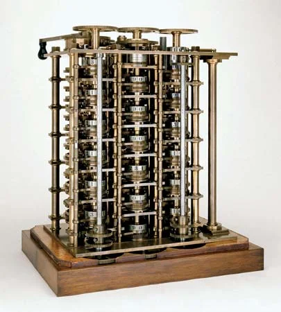
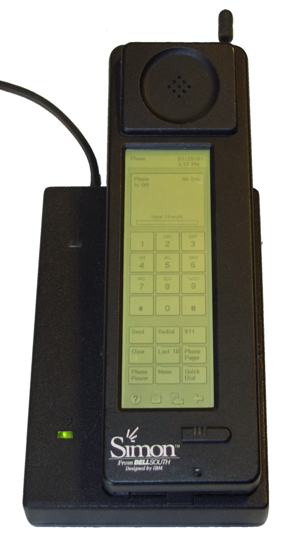

Hello, my name is Joni. One of my main hobbies is learning about tech.
In this website I've listed some computer topics I like talking about.
Use the
navigation bar to go through the content...
About
I've wanted to learn tech since I was a little kid. When I was five years old (2008). I learned about the internet. During that time, the internet looked differently to how it looked today. Because of that, when I grew up I started to wonder about the history of computing. Looking back, it's obvious that computers developed very rapidly and left many things behind. This inspired me to talk about some things that happened with the development of computing.The first computer

Apparently the first computer was called
the Harvard Mark I.
It was made by Aiken with IBM in 1944.
The machine weighed five tons,
and was 15 meters tall.
With more than 750.000 parts, it was
a very complicated, mechanical machine.
First computer with gui

In 1973, Xerox PAC developed the
Alto personal computer.
It ran the Xerox Star OS.
This operating system had
windows, icons and menus.
The first smartphone

The IBM Simon was made in 1992.
It could place/receive phone calls and
send/receive emails.
Some of its features:
touchscreen, calendar, calculator,
notepad, maps, stock reports and news.
First Android phone

The HTC dream or the T-Mobile G1,
is the first android-based phone.
It was released in 2008.
In 2009 T-Mobile announced that
it had sold over a million G1s in the US.
VR and AR

With commercial releases from
Meta, HP, Valve, Sony, and
other companies, VR could hit
mainstream audiences. Some VR/AR games
have seen great success.
Single Board Computers

Computers now take less space
than ever before.
Full-purpose computers can easily
be smaller than your palm.
Posible design advancements
The RISCV architecture was introduced
in 2010.
Its design is public and free to use.
This instruction set could help
companies design better
processors.